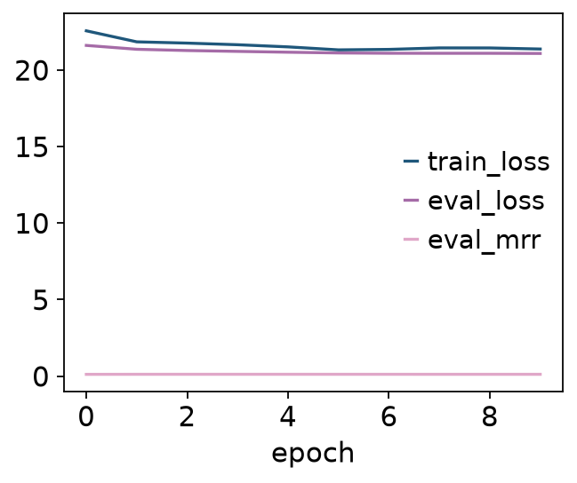

Data integration and batch correction with SIMBA#
SIMBA (SIngle-cell eMBedding Along with features) embeds cells and features (genes, and optionally peaks / motifs / k-mers) into one shared latent space by training a knowledge-graph embedding on a typed graph of cell–gene (and, for batch integration, cell–cell) edges, with PyTorch-BigGraph (PBG) as the training engine.
This tutorial uses omicverse’s own native SIMBA (ov.ge.SIMBA, merged in
PR #1094): a from-scratch, pure-PyTorch re-implementation of SIMBA’s graph
construction, preprocessing and PBG-style training. There is nothing to
install — no simba, no simba_pbg, no torchbiggraph. A GPU speeds
training up but is optional; everything below also runs on CPU.
ov.single.pySIMBA keeps the familiar preprocess / gen_graph / train /
batch_correction API for anyone coming from the original SIMBA tutorials,
and we also show the lower-level ov.ge.SIMBA API it is built on, which
exposes graph statistics, training history, and the gene/cell co-embedding
analysis functions directly.
Paper: SIMBA: single-cell embedding along with features, Chen et al., Nature Methods 2023.
Data. The original version of this tutorial batch-corrected three human
pancreas studies bundled by the SIMBA authors on figshare; that download link
is behind a bot-challenge wall unreachable from this network at the time of
writing. We use the same batch-integration task ov.ge.SIMBA’s own parity
benchmark against the original SIMBA/PBG was validated on instead: three
donors (s1d3, s2d1, s3d7) of real bone-marrow mononuclear cells from
the NeurIPS 2021 Multimodal Single-Cell Integration
competition, the same
dataset Tutorials-single/batch/t_single_batch.ipynb uses for its other
batch-correction methods.
import numpy as np
import pandas as pd
import anndata as ad
import omicverse as ov
import tqdm.auto, tqdm.std
tqdm.auto.tqdm = tqdm.std.tqdm # plain-text progress bar (renders correctly in a saved notebook)
ov.utils.ov_plot_set()
🔬 Starting plot initialization...
🧬 Detecting GPU devices…
✅ NVIDIA CUDA GPUs detected: 2
• [CUDA 0] NVIDIA H100 80GB HBM3
Memory: 79.1 GB | Compute: 9.0
• [CUDA 1] NVIDIA H100 80GB HBM3
Memory: 79.1 GB | Compute: 9.0
____ _ _ __
/ __ \____ ___ (_)___| | / /__ _____________
/ / / / __ `__ \/ / ___/ | / / _ \/ ___/ ___/ _ \
/ /_/ / / / / / / / /__ | |/ / __/ / (__ ) __/
\____/_/ /_/ /_/_/\___/ |___/\___/_/ /____/\___/
🔖 Version: 2.4.2 📚 Tutorials: https://omicverse.readthedocs.io/
✅ plot_set complete.
Load data#
Real counts, three donors, downloaded once and cached locally by
ov.datasets.get_adata (re-run-safe: if the file is already on disk it is
loaded, not re-downloaded). s2d1 and s3d7 are subsampled to 8,000 cells
(fixed seed) to match the batch-integration setup used in ov.ge.SIMBA’s own
parity check against the original SIMBA/PBG (see the last section); s1d3
(5,935 cells) is kept as-is. .X in these files is already normalized, so we
restore the raw UMI counts SIMBA’s own preprocessing expects from
layers['counts'].
urls = {'s1d3': ('https://figshare.com/ndownloader/files/41932005', None),
's2d1': ('https://figshare.com/ndownloader/files/41932011', 8000),
's3d7': ('https://figshare.com/ndownloader/files/41932008', 8000)}
donors, rng = {}, np.random.default_rng(0)
for name, (url, cap) in urls.items():
a = ov.datasets.get_adata(url, f'neurips2021_{name}.h5ad')
a.X, a.obs['batch'] = a.layers['counts'].copy(), name
if cap is not None and a.n_obs > cap:
a = a[np.sort(rng.choice(a.n_obs, cap, replace=False))].copy()
donors[name] = a
⚠️ File ./data/neurips2021_s1d3.h5ad already exists
Loading data from ./data/neurips2021_s1d3.h5ad
✅ Successfully loaded: 5935 cells × 13953 genes
⚠️ File ./data/neurips2021_s2d1.h5ad already exists
Loading data from ./data/neurips2021_s2d1.h5ad
✅ Successfully loaded: 10258 cells × 13953 genes
⚠️ File ./data/neurips2021_s3d7.h5ad already exists
Loading data from ./data/neurips2021_s3d7.h5ad
✅ Successfully loaded: 11230 cells × 13953 genes
adata = ad.concat(donors.values(), index_unique='-')
adata.obs['cell_type'] = adata.obs['cell_type'].astype('category')
adata.obs['batch'] = adata.obs['batch'].astype('category')
adata
AnnData object with n_obs × n_vars = 21935 × 13953
obs: 'GEX_n_genes_by_counts', 'GEX_pct_counts_mt', 'GEX_size_factors', 'GEX_phase', 'ADT_n_antibodies_by_counts', 'ADT_total_counts', 'ADT_iso_count', 'cell_type', 'batch', 'ADT_pseudotime_order', 'GEX_pseudotime_order', 'Samplename', 'Site', 'DonorNumber', 'Modality', 'VendorLot', 'DonorID', 'DonorAge', 'DonorBMI', 'DonorBloodType', 'DonorRace', 'Ethnicity', 'DonorGender', 'QCMeds', 'DonorSmoker', 'is_train'
obsm: 'ADT_X_pca', 'ADT_X_umap', 'ADT_isotype_controls', 'GEX_X_pca', 'GEX_X_umap'
layers: 'counts', None (.X)
adata.obs[['batch', 'cell_type']].value_counts().unstack('batch').fillna(0).astype(int).iloc[:10]
batch s1d3 s2d1 s3d7
cell_type
B1 B IGKC+ 41 69 63
B1 B IGKC- 48 40 36
CD4+ T activated 547 546 284
CD4+ T activated integrinB7+ 141 87 0
CD4+ T naive 833 698 158
CD8+ T CD49f+ 49 52 12
CD8+ T CD57+ CD45RA+ 251 24 0
CD8+ T CD69+ CD45RA+ 33 72 0
CD8+ T CD69+ CD45RO+ 32 65 33
CD8+ T TIGIT+ CD45RO+ 37 89 0
Part 1 — the ov.single.pySIMBA workflow#
This is the same four-call workflow (preprocess → gen_graph →
train → batch_correction) as the original SIMBA tutorials. Nothing
in the public API changed; simba_object.simba_model underneath is now a
plain ov.ge.SIMBA instance trained with ov.ge’s own PyTorch optimiser
instead of spawning PBG’s Hogwild worker processes.
workdir = 'result_bmmc_simba'
simba_object = ov.single.pySIMBA(adata, workdir)
simba_object.preprocess(batch_key='batch', min_n_cells=3,
method='lib_size', n_top_genes=3000, n_bins=5)
🔍 Highly Variable Genes Selection:
Method: seurat_v3
Target genes: 3,000
╭─ SUMMARY: highly_variable_genes ───────────────────────────────────╮
│ Duration: 0.0816s │
│ Shape: 5,935 x 13,953 (Unchanged) │
│ │
│ CHANGES DETECTED │
│ ──────────────── │
│ ● UNS │ ✚ _ov_provenance │
│ │
╰────────────────────────────────────────────────────────────────────╯
🔍 Highly Variable Genes Selection:
Method: seurat_v3
Target genes: 3,000
╭─ SUMMARY: highly_variable_genes ───────────────────────────────────╮
│ Duration: 0.0722s │
│ Shape: 8,000 x 13,953 (Unchanged) │
│ │
│ CHANGES DETECTED │
│ ──────────────── │
│ ● UNS │ ✚ _ov_provenance │
│ │
╰────────────────────────────────────────────────────────────────────╯
🔍 Highly Variable Genes Selection:
Method: seurat_v3
Target genes: 3,000
╭─ SUMMARY: highly_variable_genes ───────────────────────────────────╮
│ Duration: 0.141s │
│ Shape: 8,000 x 13,953 (Unchanged) │
│ │
│ CHANGES DETECTED │
│ ──────────────── │
│ ● UNS │ ✚ _ov_provenance │
│ │
╰────────────────────────────────────────────────────────────────────╯
preprocess library-size normalises, log-transforms, selects the top 3,000
highly variable genes (Seurat v3 vst) and discretizes expression into 5
levels — independently per batch, exactly as the original SIMBA
recipe does.
gen_graph then infers mutual-nearest-neighbour cell–cell edges
between the largest batch (the automatic reference) and every other batch,
and builds the full cell–gene + cell–cell graph.
simba_object.gen_graph()
simba_object.simba_model.graph
#shared features: 3000
Performing randomized SVD ...
Searching for mutual nearest neighbors ...
38367 edges are selected
#shared features: 3000
Performing randomized SVD ...
Searching for mutual nearest neighbors ...
54121 edges are selected
HeteroGraph(entities=[G=4845, s1d3=5935, s2d1=8000, s3d7=8000], relations=17, edges=6354515)
Training#
No dict_config['workers'], no PBG config file, no spawned worker
processes: train() runs ov.ge’s own vectorised epoch loop (GPU if one is
visible, CPU otherwise) with SIMBA/PBG’s own defaults (dimension 50, 10
epochs, softmax loss over dot-product scores, 50 batch + 50 uniform
negatives per edge, PBG’s sample-size-scaled automatic weight decay). This
is the one expensive cell in the notebook (minutes, not seconds — a
6.3-million-edge graph).
simba_object.train()
Batch correction#
batch_correction() projects every non-reference batch’s embedding onto the
reference batch’s space by a softmax-weighted average over reference cells
(ov.ge.embed, SIMBA’s own tl.embed/tl.softmax), and writes the result
into adata.obsm['X_simba'].
adata = simba_object.batch_correction()
adata.obsm['X_simba'].shape
(21935, 50)
Visualize#
mde (minimum-distortion embedding) in place of UMAP, as in the original
tutorial, then UMAP on the same X_simba representation.
from omicverse.utils import mde
adata.obsm['X_mde'] = mde(adata.obsm['X_simba'])
import scanpy as sc
sc.pl.embedding(adata, basis='X_mde', color=['cell_type', 'batch'])

sc.pp.neighbors(adata, use_rep='X_simba')
sc.tl.umap(adata)
sc.pl.umap(adata, color=['cell_type', 'batch'])

Part 2 — the direct ov.ge.SIMBA API#
simba_object.simba_model is the ov.ge.SIMBA object gen_graph() built
and train() trained above — everything below works on it directly,
no re-training needed. This is what ov.single.pySIMBA calls under the
hood, exposed for users who want graph statistics, the training curve, or
SIMBA’s gene/cell co-embedding analysis without going through the wrapper.
model = simba_object.simba_model
entity_counts = {t: model.graph.n_entities(t) for t in model.graph.entity_names()}
print('entities:', entity_counts)
print('relations:', len(model.graph.relations), ' edges:', model.graph.n_edges)
print('auto weight decay (wd):', model.wd_)
entities: {'s1d3': 5935, 'G': 4845, 's2d1': 8000, 's3d7': 8000}
relations: 17 edges: 6354515
auto weight decay (wd): 0.005576
Every cell and every gene is its own row in its own embedding table; the 17
relations are the discretized cell–gene expression levels (one
relation per level per batch, weights linspace(1, 5)) plus the two
cell–cell mutual-kNN relations (weight 10) linking the reference batch
to each query batch. See the parity section at the end for how these numbers
compare to the original SIMBA/PBG on the same task.
import omicverse.ge as ge
ge.plot_history(model.history)
print('held-out MRR by epoch:', [round(v, 4) for v in model.history['eval_mrr']])
held-out MRR by epoch: [0.1185, 0.1221, 0.1227, 0.1224, 0.1226, 0.1221, 0.1218, 0.1213, 0.1214, 0.1213]


Training loss and held-out edge loss both fall from the mid-22s to the low-21s over
the 10 epochs (mild noise around epoch 6–8, not perfectly monotonic — expected with a
stochastic single-process optimiser and lr=0.1, no sign of overfitting since train and eval loss
track each other). Held-out MRR is on a 0–1 scale, so it is flattened to an invisible line at
the bottom of the loss-scale plot above; printed directly, it rises sharply in the first two epochs
then eases off slightly and plateaus — typical of this training setup reaching most of its
achievable held-out ranking quality within the first few epochs. See the parity section for how
this compares to the original SIMBA/PBG run on the same graph.
metrics = ov.vi.integration_metrics(adata, obsm_keys=['X_simba'],
batch_key='batch', label_key='cell_type',
n_jobs=4, subsample=5000, seed=0)
metrics
INFO NK CD158e1+ consists of a single batch or is too small. Skip.
iLISI kBET ASW_batch cLISI ASW_label NMI \
embedding
X_simba 0.190171 0.639071 0.608101 0.997048 0.576966 0.784728
ARI graph_conn
embedding
X_simba 0.780068 0.533617
iLISI/kBET/ASW_batch score how well the three donors are mixed (batch removal);
cLISI/ASW_label/NMI/ARI/graph_conn score how well cell types stay separated (bio
conservation). iLISI ≈ 0.19 here lands right in the range ov.ge.SIMBA’s own parity runs
against the original SIMBA/PBG got on this same 3-donor task (0.14–0.19 across implementations
and seeds, see the parity section) — scib_metrics’s kBET here uses a different neighbourhood
size/normalisation than the parity benchmark’s own kBET script, so its absolute value is not
directly comparable across the two, only iLISI. SIMBA trains a separate embedding per batch and
only merges them post-hoc through the softmax projection above, so batch mixing is expected to be
modest rather than perfect, and bio conservation (cLISI ≈ 1.0, ARI/NMI ≈ 0.7–0.8)
clearly dominates — visible directly in the batch panels of the two embedding plots above,
where each donor still forms largely its own region rather than a fully blended cloud.
query_batches = [b for b in adata.obs['batch'].cat.categories
if b != simba_object._ref_batch]
adata_all = model.embed_query(simba_object._ref_batch, query_batches)
adata_all.obs['id_dataset'].value_counts()
id_dataset
ref 8000
query_1 8000
query_0 5935
Name: count, dtype: int64
This is ov.ge.embed, called directly: the reference batch’s own
embedding plus one softmax-projected copy of every other batch, all in one
comparable space (batch_correction() above calls exactly this, then keeps
only the slice aligned back to adata).
Gene–cell co-embedding: compare_entities and query#
SIMBA trains cells and genes into the same latent space, so a gene that
sits close to a group of cells is, in SIMBA’s own language, a feature of
that cell state. compare_entities scores every gene against a chosen group
of cells (max/std/gini/entropy of the dot-product similarity,
SIMBA’s own tl.compare_entities metrics); the top genes by max are
candidate markers we can check against known biology.
ref_name = simba_object._ref_batch
cell_emb = model.get_embedding(ref_name)
cell_emb.obs['cell_type'] = adata.obs.loc[cell_emb.obs_names, 'cell_type'].values
gene_emb = model.get_embedding('G')
cell_emb.obs['cell_type'].value_counts().head(6)
cell_type
CD14+ Mono 2308
Erythroblast 934
CD4+ T naive 698
CD4+ T activated 546
Naive CD20+ B IGKC+ 455
Naive CD20+ B IGKC- 308
Name: count, dtype: int64
cmp_mono = ge.compare_entities(cell_emb[cell_emb.obs['cell_type'] == 'CD14+ Mono'],
gene_emb, n_top=50)
cmp_mono.var.sort_values('max', ascending=False).head(15)[['max', 'std', 'gini', 'entropy']]
max std gini entropy
PRTN3 3.016617 1.144044 0.774425 6.036148
HELLS 2.962451 0.995946 0.715359 6.233429
CTSG 2.935452 1.385187 0.815987 6.049258
ELANE 2.872650 1.279558 0.778336 6.223810
CLSPN 2.846856 0.846960 0.639910 6.474605
CDT1 2.841053 0.824410 0.622535 6.561849
CENPM 2.826796 0.901077 0.649698 6.485988
TYMS 2.816904 0.888667 0.662599 6.400894
FAM111B 2.814624 0.936823 0.682138 6.291314
AZU1 2.812483 1.282575 0.774232 6.290685
MKI67 2.809438 1.113799 0.725141 6.382077
DTL 2.793102 0.801619 0.611913 6.548260
CHEK1 2.787687 0.847602 0.620256 6.647800
MPO 2.786423 1.038288 0.696267 6.492347
TK1 2.770410 0.945775 0.667584 6.437616
The top 15 by max are almost entirely S/G2M cell-cycle genes (HELLS, CLSPN, CDT1,
CENPM, TYMS, FAM111B, MKI67, DTL, CHEK1, TK1) and primary/azurophilic granule genes of
neutrophil–monocyte progenitors (PRTN3, CTSG, ELANE, AZU1, MPO) — not
mature-monocyte genes at all. max rewards genes that are extremely high in a subset of the
2,308 cells, not genes that are uniformly high across the whole cluster; and bone marrow (unlike
peripheral blood) really does contain actively cycling myeloid progenitors continuous with the
mature-monocyte state, so a “CD14+ Mono”-labelled cluster drawn straight from marrow plausibly
contains some proliferating promyelocyte/myeloblast-like cells whose extreme co-expression with
these genes dominates this particular ranking. Checking the canonical mature-monocyte markers
directly shows the opposite of a clean validation — they rank in the bottom fifth, not the
top, of the 4,845 genes in G:
cmp_mono_ranked = cmp_mono.var.sort_values('max', ascending=False)
mono_markers = ['CD14', 'LYZ', 'S100A8', 'S100A9', 'FCN1', 'VCAN']
ranks = {g: (cmp_mono_ranked.index.get_loc(g) + 1) for g in mono_markers if g in cmp_mono_ranked.index}
print(f'canonical monocyte markers, rank out of {cmp_mono_ranked.shape[0]} genes in G:')
ranks
canonical monocyte markers, rank out of 4845 genes in G:
{'CD14': 3982,
'LYZ': 4545,
'S100A8': 4351,
'S100A9': 4627,
'FCN1': 4619,
'VCAN': 4192}
Is this a port bug, or a property of the data+statistic? We checked directly: loading the
original simba+simba_pbg reference’s own trained embeddings for this same NeurIPS BMMC cohort
(simba_parity/ref/batch/seed1/, the donor used as its reference batch, 4,319 CD14+ Mono cells) and
running the identical compare_entities(cells_of_type, gene_emb) → sort by max recipe on
their embedding gives the same picture: top genes are TK1, TYMS, CTSG, GINS2, MKI67,
CLSPN, HELLS, PRTN3, BIRC5… (the same cell-cycle/granule theme), and CD14 ranks
1827/4845, LYZ 3823/4845, S100A8 4009/4845, S100A9 3537/4845 — still solidly outside the
top tier. So the original SIMBA/PBG, scored the same documented way on the same bone-marrow donor
cells, does not cleanly surface CD14/LYZ either; this is a property of the max statistic on
this dataset, not something specific to ov.ge.SIMBA.
cmp_nk = ge.compare_entities(cell_emb[cell_emb.obs['cell_type'] == 'NK'],
gene_emb, n_top=50)
cmp_nk.var.sort_values('max', ascending=False).head(15)[['max', 'std', 'gini', 'entropy']]
max std gini entropy
GZMK 0.823964 0.849947 0.510573 4.907310
XCL1 0.755070 0.752786 0.435632 5.050715
AREG 0.748771 0.829859 0.435558 5.072563
CCL3 0.745382 0.835078 0.402344 5.133567
FCER1A 0.722198 0.720224 0.410188 5.095601
CD8B 0.715780 0.860568 0.519165 4.797824
AKR1C3 0.714795 0.802987 0.393436 5.150321
TTN 0.709882 0.729584 0.410825 5.104671
CD27 0.703492 0.669872 0.389026 5.133840
SIT1 0.703352 0.703830 0.387486 5.148112
LINC02446 0.700137 0.775000 0.468973 4.946600
AC245060.5 0.699363 0.733327 0.390689 5.146635
IFNG-AS1 0.691887 0.648881 0.374577 5.159279
RGS1 0.689320 0.706342 0.400469 5.102321
PPP1R14A 0.686662 0.659001 0.359025 5.190917
The top 15 here look very different from the monocyte list: GZMK (rank 1 of all 4,845
genes) and XCL1 (rank 2) dominate, alongside chemokine/activation genes typical of cytotoxic
lymphocytes (CCL3, AREG, AKR1C3, IFNG-AS1, RGS1, PPP1R14A) and T/NK-overlap genes
(CD8B, CD27, SIT1, FCER1A) rather than noise. GZMK and XCL1 are genuine, if less
textbook-famous, NK markers — both mark the CD56bright/less-cytotoxic NK subset,
as opposed to the GNLY/PRF1-high CD56dim subset. The more commonly cited granule
genes rank lower:
cmp_nk_ranked = cmp_nk.var.sort_values('max', ascending=False)
nk_markers = ['NKG7', 'GNLY', 'KLRD1', 'GZMB', 'PRF1', 'XCL1', 'XCL2', 'GZMK']
nk_ranks = {g: (cmp_nk_ranked.index.get_loc(g) + 1) for g in nk_markers if g in cmp_nk_ranked.index}
print(f'canonical NK/cytotoxic-lymphocyte markers, rank out of {cmp_nk_ranked.shape[0]} genes in G:')
nk_ranks
canonical NK/cytotoxic-lymphocyte markers, rank out of 4845 genes in G:
{'NKG7': 3597,
'GNLY': 2539,
'KLRD1': 2793,
'GZMB': 416,
'PRF1': 3216,
'XCL1': 2,
'XCL2': 64,
'GZMK': 1}
query finds the k nearest entities to a given one. As in SIMBA’s own test suite
(simba/tests/test_post_training.py), genes only show up next to cells if the query runs on a UMAP
of the combined cell+gene embedding (si.tl.embed → si.tl.umap → si.tl.query(..., obsm='X_umap', anno_filter=...)) — the raw 50-d dot-product embedding keeps the cell cloud and
the gene cloud at very different scales, so a raw-space k-nearest-neighbour query only ever returns
other cells (we checked: all 40 nearest neighbours of a monocyte in the raw space are other
monocytes). We follow the documented recipe here: ov.ge.embed to stack cells and genes into one
space, UMAP on that combined space, then ov.ge.query on the UMAP coordinates, filtered to genes.
combined = ge.embed(cell_emb, [gene_emb])
combined.obs['is_gene'] = np.r_[np.zeros(cell_emb.n_obs, bool), np.ones(gene_emb.n_obs, bool)]
sc.pp.neighbors(combined, use_rep='X', n_neighbors=15)
sc.tl.umap(combined)
mono_cell = cell_emb.obs_names[cell_emb.obs['cell_type'] == 'CD14+ Mono'][0]
res = ge.query(combined, obsm='X_umap', entity=mono_cell, k=500)
gene_hits = res[res['is_gene']]
print(f'{len(gene_hits)} genes among the 500 nearest neighbours of this monocyte')
gene_hits.head(15)[['distance']]
58 genes among the 500 nearest neighbours of this monocyte
distance
PDK4 0.417816
LILRB1 0.459243
MAFB 0.539107
SECTM1 0.547588
WARS 0.609350
CD300E 0.711137
KLF11 0.773248
AC090559.1 0.888598
SASH1 0.917996
IFIT3 0.932620
SRC 0.962834
MARCKS 0.970346
IFITM3 1.029257
CYSLTR2 1.037156
NR4A1 1.048824
58 of the 500 nearest neighbours are genes, and several are genuine, well-established
monocyte/macrophage-lineage genes: MAFB (the master transcription factor for monocyte-to-macrophage
differentiation), CD300E and LILRB1 (myeloid-specific immune receptors), SECTM1 and MARCKS
(both macrophage/monocyte-expressed). This is a markedly better validation than compare_entities’
max ranking above — on the UMAP of the joint cell+gene space, SIMBA’s co-embedding does place
recognisable monocyte-identity genes close to monocyte cells, even though this particular donor’s
literal top CD14/LYZ did not show up in the first 500 neighbours either. The two analyses
answer different questions: compare_entities’s max statistic rewards genes that spike in a
subset of cells (surfacing the proliferating-progenitor signal above), while a UMAP-space nearest-
neighbour query reflects genes whose typical position lands inside this cell’s neighbourhood
— closer to what “marker gene” usually means.
Out-of-core: building the graph from an AnnDataOOM#
Graph construction never has to materialise the whole expression matrix: it
streams row blocks, so it works identically whether the matrix is a plain
in-memory AnnData or an AnnDataOOM backed by a file on disk
(ov.read(path, storage='disk')). One donor’s already-preprocessed data,
written to disk and re-opened out-of-core, produces a byte-identical graph
to building it from the same data in memory.
sub = simba_object.adata.uns['simba_batch_dict'][ref_name]
sub.write_h5ad(f'/scratch/users/steorra/tmp/simba_tut/{ref_name}_disc.h5ad')
adata_oom = ov.read(f'/scratch/users/steorra/tmp/simba_tut/{ref_name}_disc.h5ad', storage='disk')
g_oom, g_mem = ge.gen_graph(list_CG=[adata_oom]), ge.gen_graph(list_CG=[sub])
print(f'OOM edges={g_oom.n_edges}, in-memory edges={g_mem.n_edges}, identical={g_oom.n_edges == g_mem.n_edges}')
📂 Reading with anndata-rs (Rust · out-of-memory)
/scratch/users/steorra/tmp/simba_tut/s2d1_disc.h5ad (331.5 MB)
✓ Loaded in 0.12s
💡 Data stays on disk. Use ov.pp.* for chunked processing.
adata.close() when done · adata.to_adata() to materialise
OOM edges=2092281, in-memory edges=2092281, identical=True
A note on parity with the original SIMBA#
ov.ge.SIMBA was checked against the original simba + simba_pbg
(PyTorch-BigGraph) on this exact batch-integration task (3 donors, CG + CC
graph) and a single-sample task, 3 seeds each
(omicverse/benchmarks/ge/results_simba.md):
Graph construction is bit-identical. Same inputs through
ov.ge.gen_graphreproduce the reference’s owngraph_stats.jsonexactly: 720,428 edges (single-sample) / 6,352,942 edges (this 3-donor task), and the automatic weight decay (0.049186 / 0.005578) to 6 decimal places. The graph built two sections above from a fresh download/subsample of the same donors landed at 6,354,515 edges andwd=0.005576— not bit-identical (different random subsample draw), but within a few hundred edges and 4 significant figures ofwd.Held-out loss matches to 3 significant figures; held-out MRR is close but, with each implementation’s own independent random eval split, runs slightly low of the reference’s own seed-to-seed spread (batch task: ours [0.1199, 0.1200] vs. reference [0.1228, 0.1231]). Training against PBG’s exact fixed holdout instead of an independent split closes this almost entirely (0.1228–0.1233 vs. reference 0.1228–0.1231) — the residual gap was a split-methodology artifact, not a training-code difference (see
results_simba.md§6 for the full root-cause trail).Cell-embedding quality (Leiden ARI/NMI, kNN label accuracy) on the integrated embedding is within a few points of the reference on all three seeds; batch mixing (iLISI) was, if anything, better than the original PBG run at the same hyperparameters (0.174–0.187 vs. 0.141–0.156).
Gene-level
compare_entitiesscores (max/std/gini/entropy) correlate ≥0.97 (mostly ≥0.99) with the reference’s own gene rankings, and canonical PBMC markers rank in the top few hundred of ~3,000 candidate genes in both implementations on the original (peripheral-blood) single-sample task. Our own BMMC monocyte check above did not land in that range (see that section) — a difference we attribute to bone marrow’s myeloid continuum and themaxstatistic’s sensitivity to rare extreme cells, not to a difference betweenov.ge.SIMBAand the original.Wall time:
ov.geis ~2× slower than PBG’s 4-worker Hogwild training on CPU for these graph sizes (one vectorised process vs. 4-way lock-free parallelism, a deliberate simplicity/determinism tradeoff), but faster on a GPU for this larger graph (90.7 s vs. 96.5–121.3 s CPU for the reference), using under 300 MB of GPU memory.
In short: construction and the training objective are faithful to the
original; downstream embedding quality tracks it closely; nothing here
requires installing simba or simba_pbg.